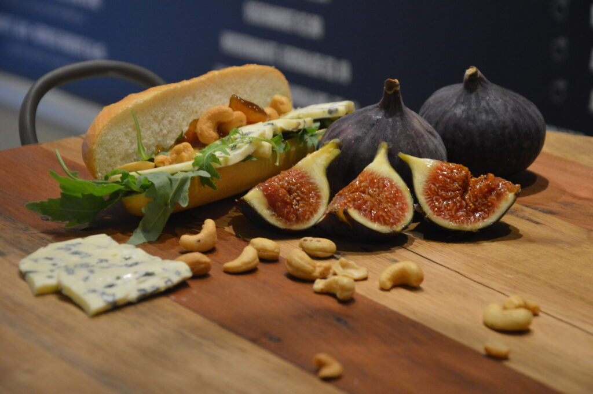
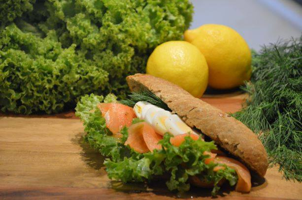
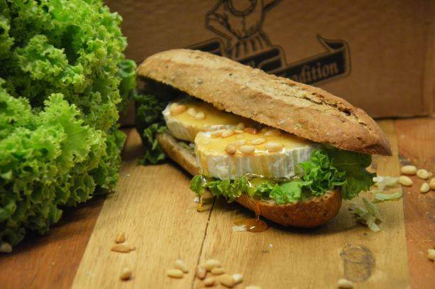
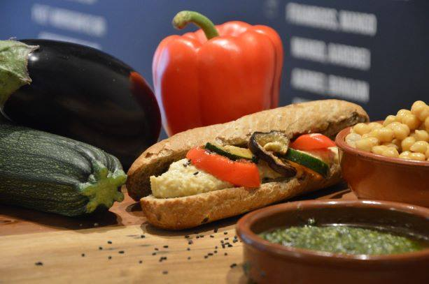
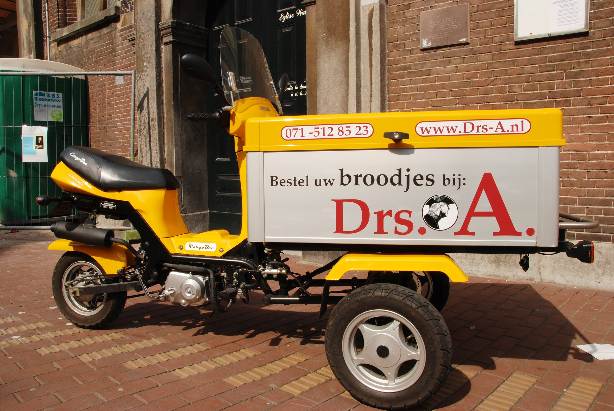

Basislunch
2 pistoletjes p.p., allebei enkel belegd
6,80 p.p.In achttien jaar uitgegroeid tot een begrip in de Leidse regio. Haal je broodje in onze winkel, schuin tegenover de Stadsgehoorzaal, of laat je lunch bezorgen, thuis of op kantoor.

Ruim honderd broodjes, salades, wraps en drankjes. Bestel bij voorkeur een dag van tevoren; voor vandaag kun je ons bellen.
Boeren achterham, rucola, mayonaise en uitjes
Bacon, ijsbergsla, tomaat en mayonaise
Brie, bacon, honing, rucola, pittenmix
Brie, parmaham, stoofpeer, walnoten en balsamico-siroop
Gerookte kip, avocado, bacon, tomaat, ijsbergsla, mayonaise
Eiersalade, bacon en ijsbergsla
Filet Americain, eitje, uitjes en Joppiesaus
Ham, kaas, tomaat, komkommer, ijsbergsla, gekookt eitje groene kruidendressing
Kipgehakt, pindasaus, komkommer, gekookt eitje en gebakken uitjes
Ossenworst, truffelmayonaise, uitjes, pittenmix en een gekookt eitje
Parmaham, bieslook-roomkaas, rucola en truffelolie
Parmaham, burrata, verse pesto
Pate, bacon, mosterd, zoetzure augurk, ijsbergsla
Pate, vijgenjam, rucola
Pikante kipgehakt, bieslook-roomkaas, avocado, cheddarkaas
Pikante kipgehakt, chilisaus en komkommer
Rosbief, verse pesto, pittenmix, rucola en parmezaansekaas
Rosbief, truffelmayonaise, rucola en parmezaanse kaas
Rosbief, rucola, wasabi-mayonaise en parmezaanse kaas
Fricandeau en tonijnsalade (met mayonaise, tomaat en kappertjes)
Gerookte zalm, ijsbergsla, honing-mosterd-dille dressing, gekookt eitje
Gerookte zalm, bieslook-roomkaas, pittenmix en uiensprouts
Krabsalade, avocado, sesam, wasabimayo en komkommer
Huisgemaakte tonijnsalade, avocado, cashewnoten en chillisaus
Huisgemaakte tonijnsalade, avocado, gekookt ei, crispy chilli olie, gebakken uitjes
Tonijnsalade, rucola, citroenpesto
Tonijnsalade, cheddarkaas en uitjes
Blauwe kaas (Fourme d'Ambert), vijgenchutney, cashewnoten, rucola
Fourme d'Ambert, vijgenjam, cashewnoten, rucola
Boerenkaas (Boer'n trots), rucola, mosterd en mayonaise
Brie, verse pesto, spinazie, truffelmayo en pittenmix
Burrata, tomaat, verse pesto, granaatappelsiroop en rucola
Gegrilde groente (paprika en courgette), spinazie, komkommer, satesaus en gebakken uitjes
Geitenkaas, honing, pittenmix en ijsbergsla
Geitenkaas, verse pesto, spinazie en honing
Kaas, tomaat, komkommer, ijsbergsla en een gekookt eitje
Hummus, avocado, pittenmix en ijsbergsla
Hummus, gegrilde groente (courgette en paprika), uiensprouts, geroosterde tuinbonen, rucola en groene-kruidendressing
Gepofte pompoen, feta, gekarameliseerde ui & rozijnen, verse tijm
Gemarineerde oesterzwammen (Cochujang, sesam), Kimchi, komkommer, vegan sriracha-mayo
Vegan Bacon, ijsbergsla, tomaat en vegan sriracha-mayonaise
Pate, vijgenjam, rucola
Tomaat, feta, komkommer, rode ui, olijven, ijsbergsla, olijfolie
Tomaat, feta, komkommer, rode ui, olijven, ijsbergsla, olijfolie
Rucola, ijsbergsla, komkommer, blauwe kaas (Fourme D'Ambert), cashewnoten en vijgenchutney
Rucola melange, tomaat, burrata, pittenmix, verse basilicum, granaatappel-syroop, pestodressing
Rucola melange, tomaat, burrata, pittenmix, verse basilicum, granaatappel-syroop, pestodressing
Ijsberg sla, gerookte kip, avocado, tomaat, bacon, parmezaanse kaas, huisgemaakte croutons, gekookt ei mayo-dressing
Ijsberg sla, gerookte kip, avocado, tomaat, bacon, parmezaanse kaas, huisgemaakte croutons, gekookt ei mayo-dressing
Rucolamelange, verse spinazie, komkommer, geitenkaas, cashewnoten, honing en pestodressing
Rucolamelange, verse spinazie, komkommer, geitenkaas, cashewnoten, honing en pestodressing
Gerookte zalm, rucola-melange, komkommer, kappertjes, gekookt eitje, pittenmix en honing mosterd-dille dressing
Gerookte zalm, rucola-melange, komkommer, kappertjes, gekookt eitje, pittenmix en honing mosterd-dille dressing
Verse croissantjes (te bestellen v.a. 10 personen)
Meerprijs apart verpakken in folie en labelen (per broodje)
Mini assortiment van 3pp kleine belegde broodjes, luxe belegd (minimaal voor 10 personen te bestellen)
Pan vers gemaakte soep (soort soep in overleg) minimaal 2 dagen van tevoren bestellen
Krabsalade, ijsbergsla, avocado, komkommer, wasabimayo en sesamzaadjes
Pikante kip, roomkaas, avocado, cheddar, chillisaus, ijsbergsla
Rosbeef, roomkaas, chillisaus, uitjes, ijsbergsla
Tonijnsalade, ijsbergsla, komkommer, wasabimayo en sesamzaadjes
Noorse zalm, roomkaas, pittenmix, ijsbergsla, ei en honing-mosterd dressing
Avocado, roomkaas, chillisaus, cashew nootjes, komkommer, mix van ijsberg-en rucolasla, spinazie
Prijzen per stuk in euro. Seizoensspecials wisselen.
Naar de bestelpagina


Witte of meergranen pistoletjes, twee per persoon, zo luxe als je wilt. Wij verzorgen ook borrels met hapjes.
2 pistoletjes p.p., allebei enkel belegd
6,80 p.p.2 pistoletjes p.p., 1 luxe en 1 enkel belegd
8,25 p.p.2 pistoletjes p.p., allebei luxe belegd
9,70 p.p.2 luxe broodjes p.p., allebei luxe belegd
10,40 p.p.Bij Drs A kun je ook terecht voor het cateren van borrels met hapjes. Vertel ons wat je in gedachten hebt.

Vanuit onze winkel aan de Breestraat bezorgen we bij vele organisaties in Leiden en omliggende plaatsen.
Bestelling vergeten? Bel 071 512 85 23, dan kijken we of we alsnog op je gewenste tijd kunnen leveren.
Dagelijks komen veel mensen bij ons voor een lekker broodje. Eet het bij ons of haal het op: we zitten in de Breestraat op nummer 67, schuin tegenover de Stadsgehoorzaal.
Drs A Belegde Broodjes & Catering